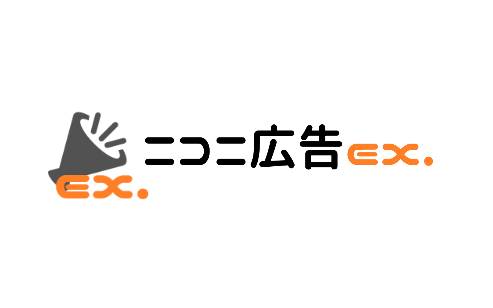
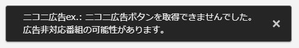

News


ニコニ広告ex.は、ニコニコ動画・生放送の視聴ページにあるニコニ広告画面を、コメント欄に表示させるブラウザ拡張機能です。
通常ではポップアップで表示されてしまうニコニ広告画面ですが、生放送の「ギフト」機能のように表示させることで、
余計な操作無しで広告ポイントを注ぎ込むことができます。
ニコニ広告ex. 利用規約
ニコニ広告ex.（以下、当拡張機能）は、猫月遥歩（ねこづきあゆむ）（以下、開発者）が趣味で開発したプログラムです。 「niconico」「ニコニ広告」及び「株式会社ドワンゴ」様には何ら関わりはありませんのでご注意ください。
なお、本規約は、開発者の判断により、変更されることがあります。 開発者は変更後の契約が掲示された以降にユーザーが当拡張機能を利用したことをもって、変更後の利用条件にユーザーが承諾したものとみなします。
免責事項
当拡張機能を利用する際は、全て自己責任で利用する必要があります。 当拡張機能を利用したことによって生じた損害等の一切の責任を負いかねますので、ご了承ください。 また、開発者は当拡張機能を永続的に開発・利用環境を保証するものではありません。
プライバシーポリシー/情報収集について
開発者は当拡張機能本体に個人情報を収集する機能を備えることはありません。
公式サイト、各ブラウザ公式ストアでは、Google LLC 提供の Googleアナリティクス を利用しています。Googleアナリティクスでは、トラフィックデータの収集のためにCookieを利用しています。 このトラフィックデータは匿名で収集されており、個人を特定するものではありません。 収集されないようにしたい場合は、ブラウザの設定からCookieを無効化、及び拡張機能を利用しないなどの措置をしていただくようお願い致します。
2020年5月16日 制定
広告の画面が狭すぎる
この拡張機能では、コメント欄に広告画面を表示させるので、コメント欄が小さいと広告画面も小さくなってしまいます。 動画・生放送プレイヤー設定より、画面サイズを「自動」に設定の上、再度お試しください。
生放送エラーメッセージについて
広告ができない番組、作成に失敗したときなど、左下にエラーメッセージが表示されます。内容を確認し、これはおかしい！というときはご連絡ください。
急な動作不良につきまして
本拡張機能は、有志が制作したツールとなり、公式と何ら関わりはありません。 バグ等のご連絡は、niconico運営ではなく、こちらまでお願い致します。
また、公式による機能追加直後は動作しなくなる可能性もございます。 こちらの対応までしばらくお待ちいただけますようお願い致します。
修正：拡張機能メニューからチケットの確認等が行えない不具合
修正：soでないチャンネル動画で拡張機能が動作しない不具合
修正：公式サイトURL移動による各所リンク修正
不具合発生のため一部機能を無効化
修正：チャンネル動画(so)で動作しない不具合
修正：アップデート情報ページ下部アイコンが表示されない不具合
追加：拡張機能メニューを作成
修正：軽微なバグ修正
更新：Firefox版リリース
修正：Firefox対応によるスクリプト調整
更新：Chrome版リリース